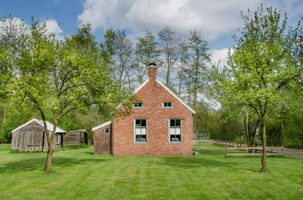

¿Deseas Adoptar Una Mascota?
Si deseas adoptar una mascota, estas en el lugar indicado,
en este lugar puedes encontrar informacion de mascotas que
estan disponibles para llenar de amor tu hogar, y muchos
consejos para brindarle a tu nueva mascota los mejores
cuidados que necesita,
Adopcion De Perros
si deseas adoptar un perro o un gato puedes darle click en el siguiente boton
Adopcion

Hogares De Paso
si deseas ayudar a los hogares de paso puedes darle click en el siguiente boton.
AyudasMascotas Perdidas
si deseas miarar o reportar mascotas perdidas puedes darle click en el siguiente boton.
Perdidos